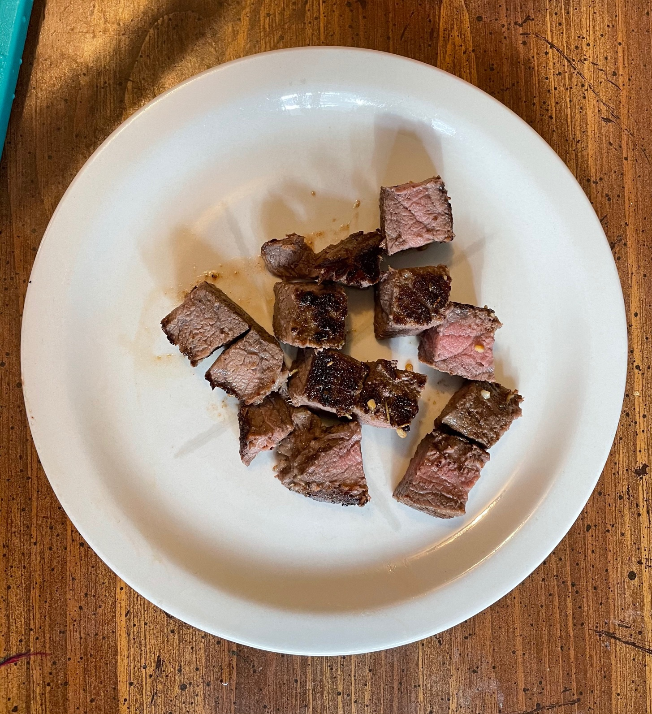

Adobo Chicken
This recipe comes from one of my husband's friends. We absolutely love this recipe and everyone we have made it for loves it.
Ingredients
- 3lbs Chicken thighs bone-in
- 1 cup soy sauce
- 1 cup water
- 1 cup brown sugar
- 1 tbsp apple cider vinegar
- 1/2 white onion
- 4 cloves of garlic (minced)
- 2 bay leaves
First we need to marinate the chicken. In a medium size bowl put soy sauce, water, brown sugar, vinegar, onion, garlic and bay leaves.
Mix together and put in the chicken, mix until the chicken is evenly coated. Put in the fridge for 3 hours.
After the 3 hours preheat the oven 425. In a 9 by 13 baking pan put all the chicken in the baking pan. Pour the marinade on top and place in the oven. Cook for 30 mins or until it hits a internal temperature of 165.
Once the chicken is done serve with white rice or your choice of side. Enjoy!